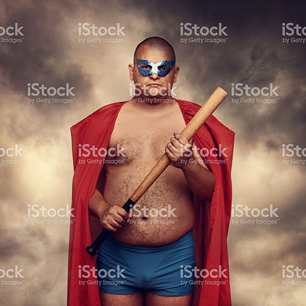

The League was founded by Dr. Goliath's belief that he could make a better world, and that the law abiding public deserve more. Although he had been a part time hero for more than 25 years, it was only during the early 2000s that he
began seriously considering going full time. In September 2014, he left his position as a senior webmaster at Seneca College and dedicated himself to turning his vision into reality.
The next year was spent consolidating funding, acquiring expertise and equipment, as well as gathering a team of people with the skills and temperament to make the venture a success. The English super genius “Brainio” was hired to
develop the Fortress of Justice - a large building capable of housing the team, and making it the defacto source for justice across Toronto. He, along with Ellen Qwerty, a biologist who trained as a beer brewmaster, set about the
important task of establishing the Leagues reputation for justice that has since been acknowledged by villains as "the biggest problem to world domination we've ever seen” - (Electo).
The League of Heroes began operations in January of 2015. Located at 1234 Do-gooders Way in Toronto's tech district, we have established ourselves as Canada's first and foremost super team. Its founder, Dr. Goliath, has since been
instrumental in collecting heroes from around the country including Shriek, Ironjaw, Power-Maiden, Tom from Accounting, and the mysterious Shroud.
The League’s sixth member joined last year. Boasting 3 laser projecting eye cannons, "Triclops" was an immediate crowd favourite. His distinctive costume and loud war cry set him apart from other heroes, and gained him an instant following.
Since that time, the League has steadily expanded its roster. This summer, we intend on introducing our latest hero (keep watching the skies for C.L.A.M.P in July).
2015
February:
League revealed to the public amid thunderous applause and string of successfully stopping bank heists.
2016
January:
Business plan is completed
August:
Toronto publicist Nerdly McNerderson is hired.
September:
United Nations recognize the League as a global source for good
2017
May:
A new class or recruits began testing their powers for membership in the League. Only the finest will get membership.